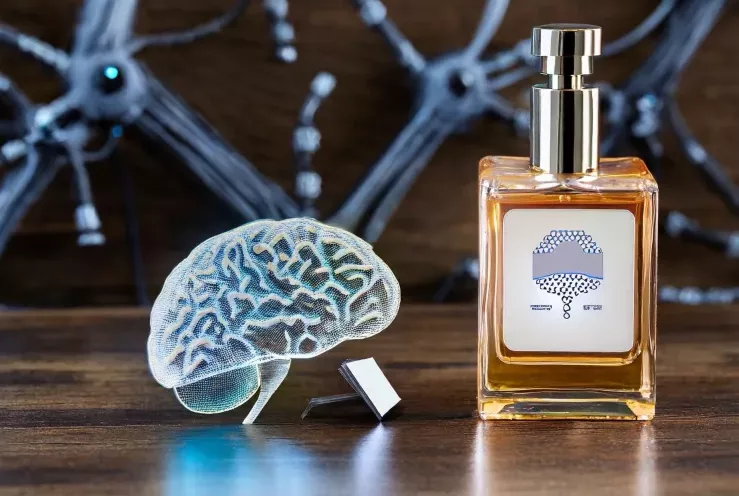

Ante la pregunta sobre la perfumería molecular vs. los ingredientes naturales, los perfumistas de la Academia del Perfume se muestran unánimes en cuanto a los beneficios que ha supuesto la posibilidad de crear ingredientes de forma científica. Para ellos supone un impulso a la creatividad y sostenibilidad en la perfumería y defienden la convivencia de la naturaleza con el genio del hombre, capaz de crear moléculas. La dicotomía no tiene sentido, ya que el producto natural en sí mismo es una mezcla de moléculas.
Existen aproximadamente mil ingredientes naturales catalogados, mientras que los perfumistas pueden descubrir cada día nuevas moléculas.
Sin las moléculas no se podrían hacer muchos de los perfumes y abren un lenguaje mucho más rico de evocación. No hay límite para que ciencia y naturaleza convivan con respeto